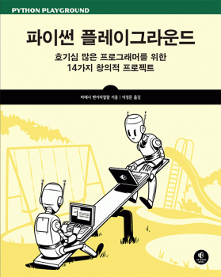

한국에서 일어나는 파이썬 관련 소식을 전합니다.
블로그
파이썬 언더스코어(_)에 대하여 by mingrammer님
파이썬에서 밑줄(_)을 활용하는 네 가지 경우를 mingrammer님이 짧은 예시와 함께 설명합니다.
추천 시스템의 기초 by 데이터사이언스 스쿨
오픈소스 추천 시스템인 RecSys를 활용하여 사용자가 콘텐츠를 어떻게 평가할지 예측하는 시스템을 만들어 봅니다.
RescueTime 자동화하기 by Jello님
컴퓨터 사용 패턴을 측정하는 RescueTime의 정보를 하루 한 번씩 자동으로 알려주는 봇을 Jello님이 만들었습니다. 1편과 2편에서는 API 키 발급과 연동 시스템을 설명하고, 3편에서 파이썬 코드를 다룹니다.
Jupyter 서버 설치 및 실행법 by 이재민 님
Jupyter 서버를 실행하는 다양한 옵션과 오류 대응 방법을 이재민 님이 정리하였습니다.
신간
파이썬 플레이그라운드 by 에이콘

구인
라프텔
웹툰/만화/애니 추천 서비스인 라프텔에서 Django 경험이 있는 웹 개발자를 모집합니다.